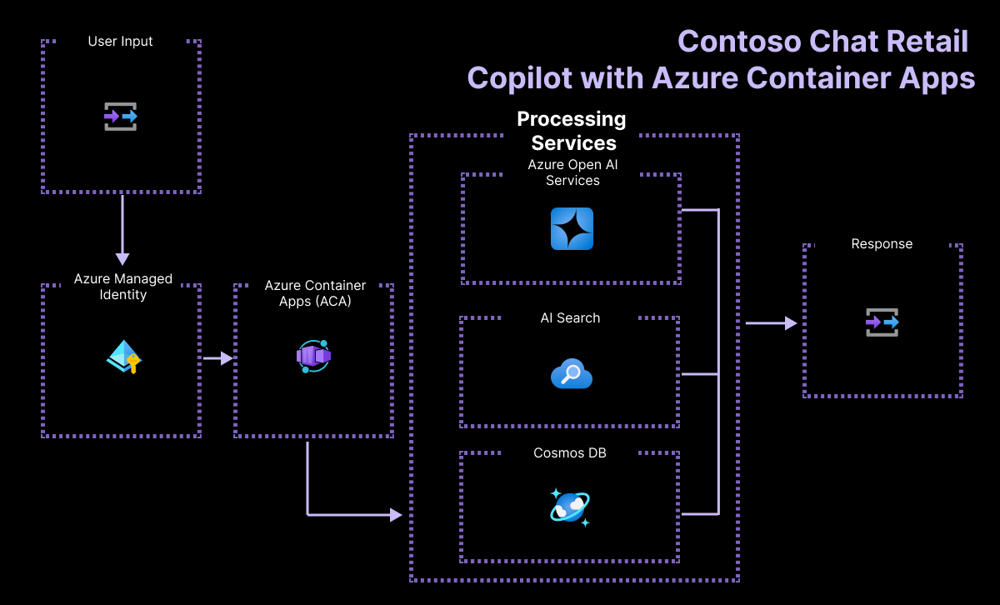

3️⃣ | Explore App Infrastructure
Let's Review where we are right now
- We set up our development environment (GitHub Codespaces)
- We provisioned our infrastructure (Azure Resources)
- We connected our dev environment to our infra (Auth & Env Vars)
- We used SDK and CLI tools to push updates to infra (Data & App)
In this section, we'll take a minute to understand what our Azure infrastructure looks like, and validate that the resources are deployed and initialized correctly. Here's a reminder of the Azure Application Architecure showing the key resources used. Let's dive in.

Step 1: Validate Azure Cosmos DB is populated
The Azure CosmosDB resource holds the customer data for our application. It is a noSQL database that contains JSON data for each customer, and the prior purchases they made.
- Switch to the Azure Portal (Tab 3️⃣) and display the
rg-AITOURresource group Overview - Click the
Azure Cosmos DB accountresource name to visit its details page - Click
Data Explorerin the top-nav menu- dismiss the popup dialog to skip the movie
- see:
contoso-outdoorscontainer withcustomersdatabase - click
customers, then selectItems - you should see: 12 data items in database
✅ | Your Azure Cosmos DB resource is ready!
Step 2: Validate Azure AI Search is populated
The Azure AI Search resources contains the product index for our retailer's product catalog. It is the information retrieval service for RAG solutions, using sentence similarity and semantic ranking to return the most relevant results for a given customer query.
- Switch to the Azure Portal (Tab 3️⃣) and display the
rg-AITOURresource group Overview - Click the
Search serviceresource name to visit its details page - Click
Search Explorerin the top-nav menu- see Search explorer with default index
contoso-products - click "Search" with no other input
- you will see: Results dialog filled with index data for the entire product database.
- see Search explorer with default index
- Enter
sleeping bagin the text box, and click Search- Verify that the first result returned relates to a sleeping bag from the catalog
- Enter
something to make food within the text box, and click Search- Verify that the first result returned relates to a camping stove
✅ | Your Azure AI Search resource is ready!
Step 3: Test the Deployed Container App
When iterating on a prototype application, we start with manual testing - using a single "test prompt" to validate our prioritzed scenario interactively, before moving to automated evaluations with larger test datasets. The FastAPI server exposes a Swagger API endpoint that can be used to conduct such testing in both local (Codespaces) and cloud (Container Apps). Let's try it on a fully functional version of the endpoint!
- Return to your deployed Azure Container App in Tab 5️⃣
- Add a
/docssuffix to the URL and browse to that path - you will see: FastAPI page - Expand the
POSTsection by clicking the arrow- click
Try it outto make inputs editable - enter
Tell me about your tentsfor question - enter
2for customer_id - enter
[]for chat_history - enter Execute to run the endpoint with the provided parameters.
- click
You will get a response body with question, answer and context components.
questionis the customer's question as typed in the chat window on the Contoso Outdoor websiteansweris the chatbot's response to the customer'squestion, as generated by this RAG applicationcontextis the additional information provided to the Generative AI model, which it used to ground its answer. In this app, that includes information about products relevant to the customer question. The products selected may depend on thecustomer_idand their associated order history.- The web app provides the
chat_historyfrom the chat window, which provides additional context for the generative AI model to ground its response.
✅ | Your Contoso Chat AI is deployed - and works with valid inputs!
Now you understand the application architecture, and have a sense for the retail copilot API, it's time to dig into the codebase and understand the three stages of our GenAIOps workflow - ideation, evaluation, and operationalization.
Next → Let's Ideate Apps With Prompty! and learn about prompt engineering!